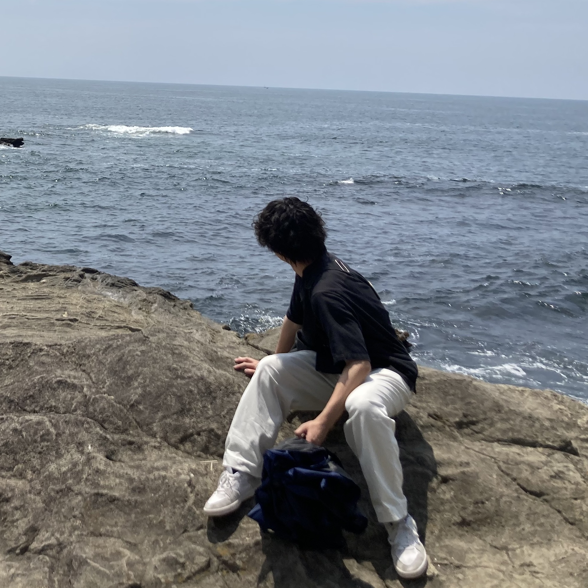
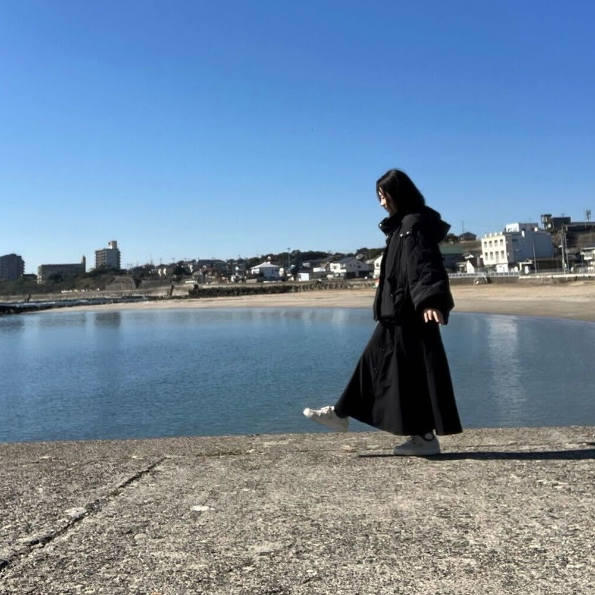
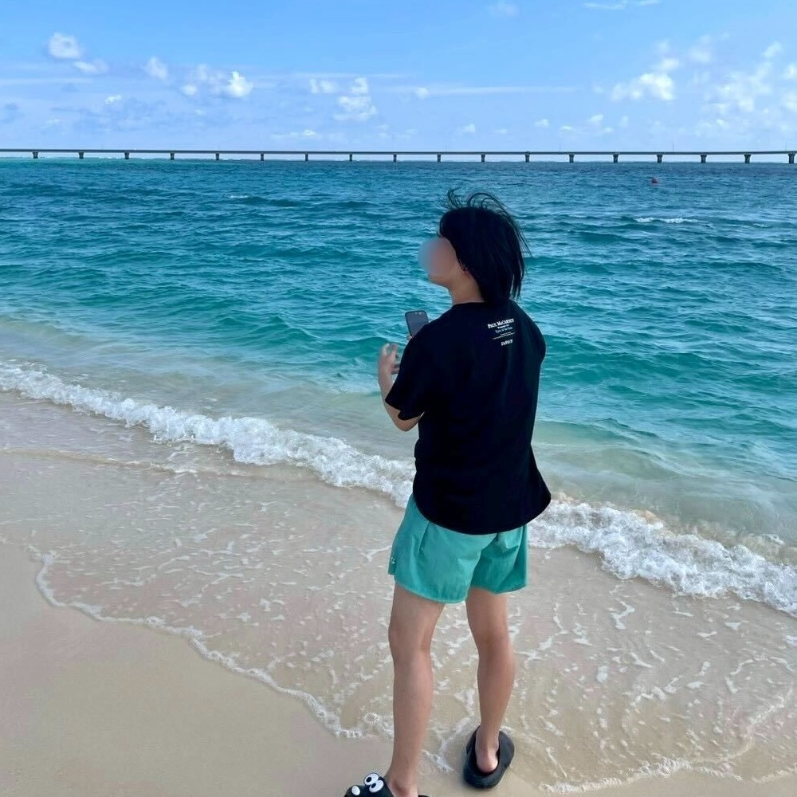

研究室メンバー
研究室主催者
-
福永 津嵩（准教授）個人ページ
スタッフ
-
比企 佑介（助教）
-
淺賀 裕介（博士研究員）
大学院生
-
森平 健太郎（M2）研究トピック: 機能性RNA、機械学習
-
青木 賢（M1）研究トピック: 機能性RNA、アルゴリズム
-
石塚 結衣（M1）研究トピック: シングルセルオミクス、データ解析
-
磯部 和花（M1）研究トピック: 機能性RNA、機械学習
-
野代 乙希（M1）研究トピック: 微生物ゲノム解析、パイプライン開発
-
増田 大希（M1）研究トピック: 生物ネットワーク解析、数理モデル
-
山岸 優希（M1）研究トピック: 微生物ゲノム解析、データ解析
短期留学生
-
Manon Ragnet（短期留学生）研究トピック: 機能性RNA、データ解析
学部生
-

衞藤 凌佑（B4）研究トピック: 機能性RNA、実験+パイプライン開発
-
黒田 ノア（B4）研究トピック: 微生物ゲノム解析、機械学習
-
齊川 佳希（B4）研究トピック: 生物ネットワーク解析、数理モデル
-

進藤 さや子（B4）研究トピック: 微生物ゲノム解析、実験+データ解析
-

杉山 輝（B4）研究トピック: 機能性RNA、実験+機械学習
-